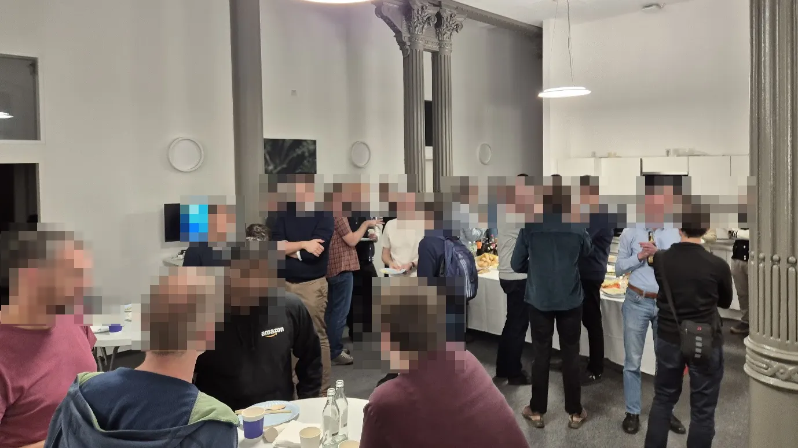
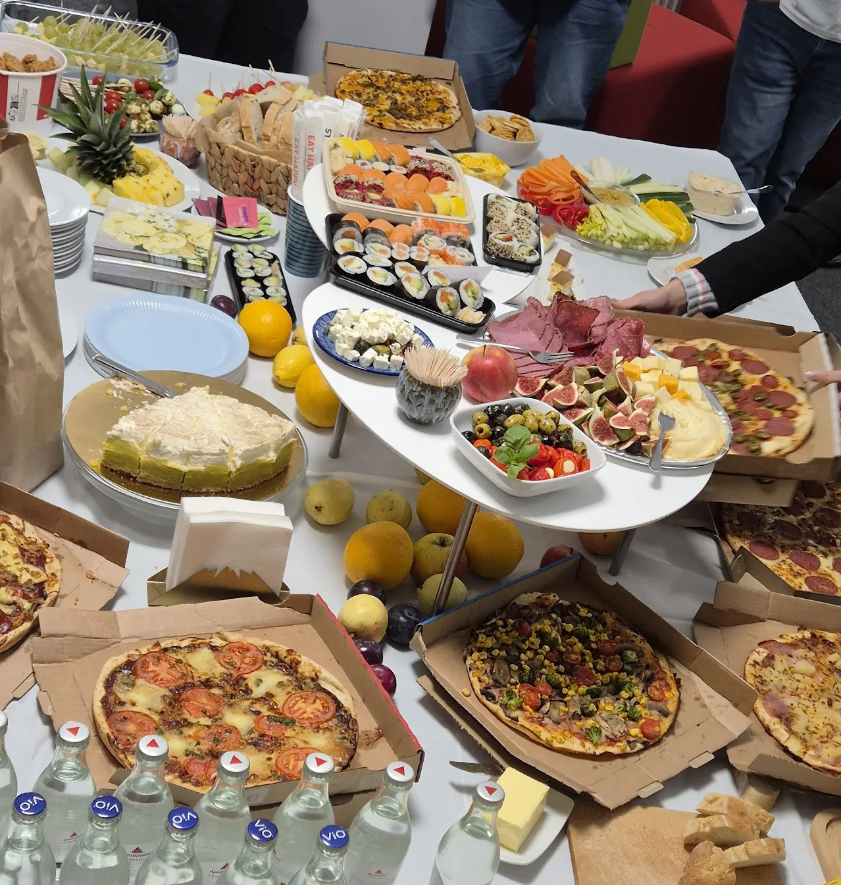
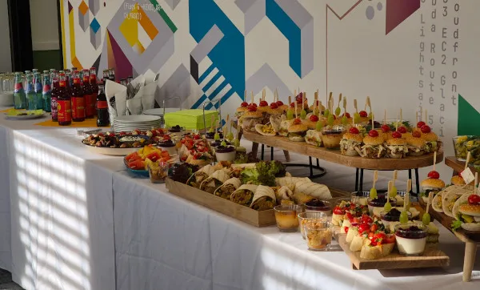
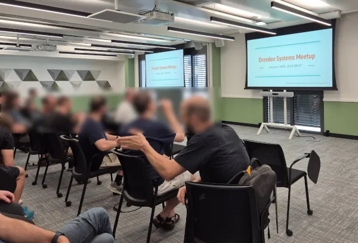
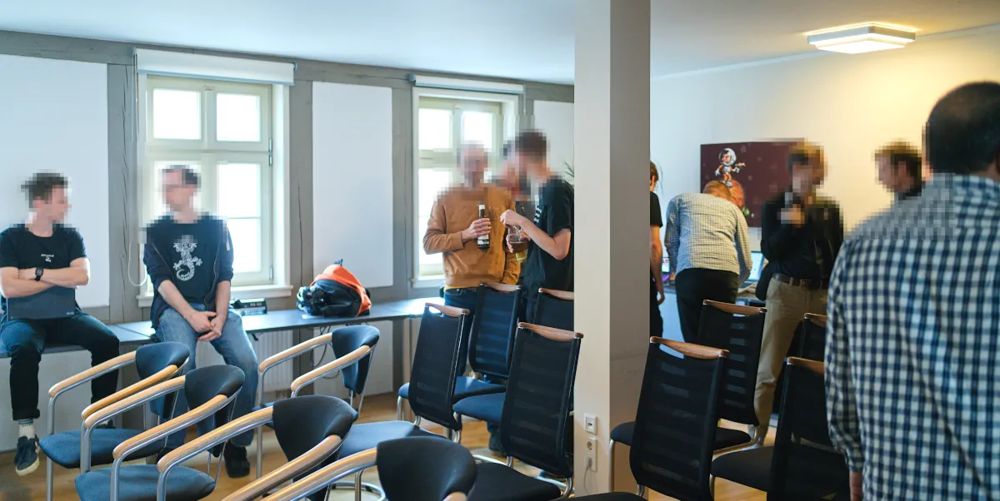
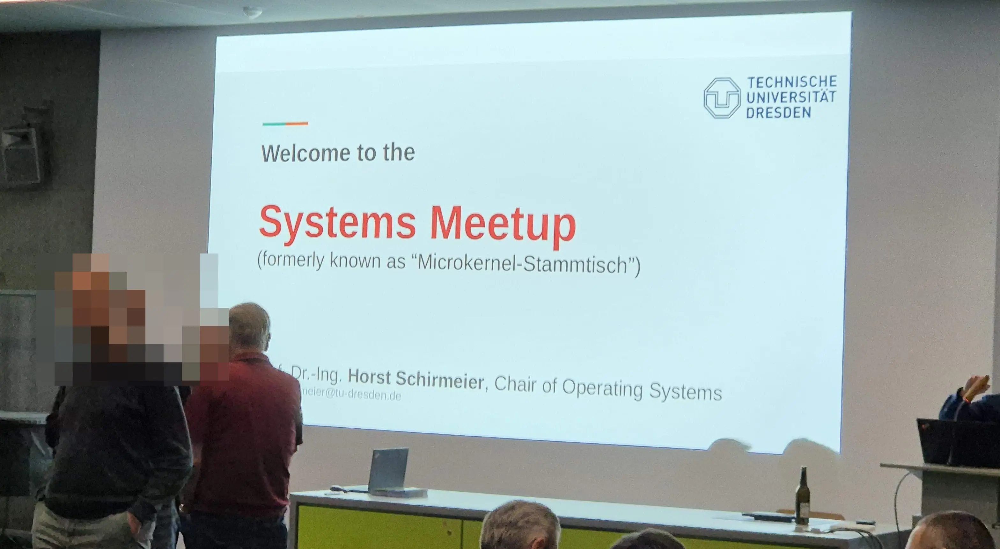
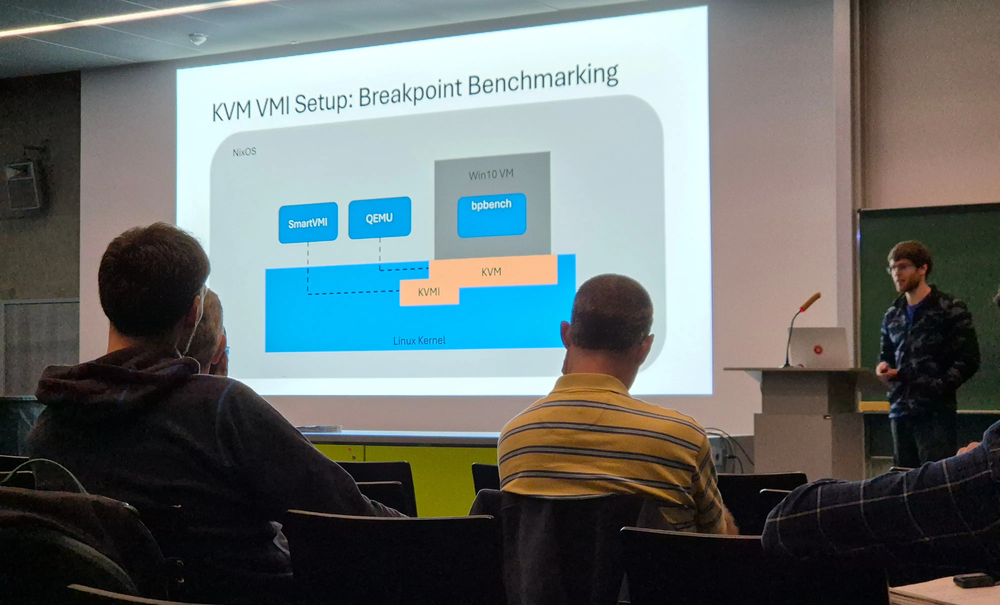
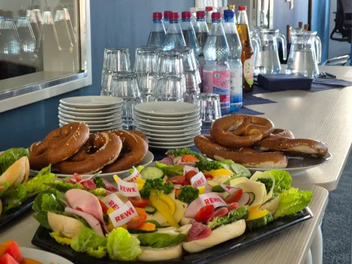
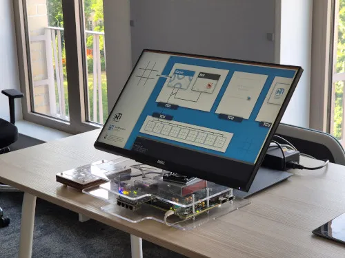

[FULLY BOOKED] Thu., Dec 4th, 2025 @ Cyberus Technology
Open for 2026 hosts! ‐ The December meetup is fully booked with 40 attendees. Wow, thanks!
A regular meetup for all people in Dresden and the surrounding area working in systems context. This includes but is not limited to:
Typically, we have 20-35 attendees.
For the first time, with 45 attendees, we crossed the 40 people boundary! To be fair, from the 45 people that showed up 15 were from Huawei, but nevertheless we gathered 30 folks from 18 distinct affiliations, including people from Berlin. The evening featured two lightning talks, and two presentations with demos.
After that, we had the by far best buffet so far, thanks Huawei for sponsoring! This is not a matter of course, and we are very thankful for that! Further, this is not a requirement for future hosts!
 Our summer meetup brought together 35 attendees from over 12 affiliations. The evening featured two insightful talks and one pitch:
git-llm-pick -- extending
git-cherry-pick with an LLM
– Norbert Manthey, Amazon AWS
After that, we had tasty food and drinks with lively discussions until 22:00 o'clock.
 Our spring meetup brought together over 30 attendees from over 10 affiliations. The evening featured three engaging talks:
After that, we had snacks and drinks with lively discussions until 22:30 o'clock.
Our third and largest meetup to date brought together 32 attendees at the APB building, hosted by Prof. Horst Schirmeier. The evening featured four engaging lightning talks:
After that, we had drinks and pizza with lively technical discussions until 22:15 o'clock.
 We had our second meetup at the Barkhausen Institute near Postplatz. Although it was summer vacation time, we gathered 15 people from various companies and educational/research institutions. After an interesting lightning talk by Michael Roitzsch (BI), a lively discussion about the M3 research project followed.
 This was the first meetup after the long Corona break. Previously, the meetup was called Mikrokernstammtisch. Now, it is called systems meetup. We had 28 attendees from multiple local companies and the TU dresden. It was a great kick-off! The event had pizza and drinks sponsored by Wirtschaftsförderung Sachsen GmbH.
Usually we have attendees of people working at:
#dd-systems-meetup:cyberus-technology.de
sysmeetup@os.inf.tu-dresden.de
maintained by TU Dresden, with a few selected trusted
moderators from the community. You can subscribe using the
online form. Usually 2-4 emails per quarter.
@dd_systems_meetup@mastodon.social
@ukvly
For discussions, I'm kindly asking you to use the provided Matrix channel rather than email, if possible. I'm nevertheless happy to respond to emails as well.
Every 2-4 months with 3-5 meetups per year, usually on a Thursday 18:00 to 22:00 o'clock. The location changes. Feel free to reach out and host a meetup!
Dresden has a rich ecosystem of companies and research in the field of operating systems and systems engineering in general. Especially, between ~2000 and ~2017, there was a "golden era" of microkernels, both in academia and various local companies. That's where the term ukvly (microkernel valley) originates from.